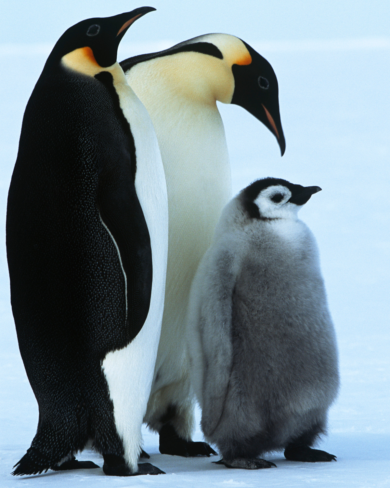
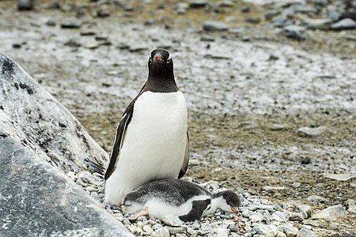

Los pingüinos en su mayor parte se reproducen en grandes colonias, con la excepción de las especies de ojos amarillos y Fiordland; Estas colonias pueden variar en tamaño desde tan solo 100 parejas para los pingüinos papúa hasta varios cientos de miles en el caso de los pingüinos rey, macarrones y de barbijo. Vivir en colonias da como resultado un alto nivel de interacción social entre las aves, lo que ha llevado a una gran repertorio de exhibiciones visuales y vocales en todas las especies de pingüinos. Las manifestaciones agonísticas son aquellas destinadas a confrontar o ahuyentar, o alternativamente apaciguar y evitar conflictos con otras personas.
Los pingüinos forman parejas monógamas durante la temporada de reproducción, aunque la tasa de recuperación de la misma pareja varía drásticamente. La mayoría de los pingüinos ponen dos huevos en una nidada, aunque las dos especies más grandes, el emperador y el rey, ponen solo uno. Con la excepción del pingüino emperador, donde el macho lo hace todo, todos los pingüinos comparten las tareas de incubación. Estos turnos de incubación pueden durar días e incluso semanas, ya que un miembro de la pareja se alimenta en el mar.

Los pingüinos generalmente solo ponen una nidada; la excepción es el pequeño pingüino, que puede criar dos o tres crías en una temporada.
Los huevos de pingüino son más pequeños que cualquier otra especie de ave cuando se los compara proporcionalmente al peso de las aves parentales; a 52 g (2 oz), el huevo de pingüino pequeño es el 4,7% del peso de sus madres, y el huevo de pingüino emperador de 450 g (1 lb) es el 2,3%. La cáscara relativamente gruesa forma entre el 10 y el 16% del peso de un huevo de pingüino, presumiblemente para reducir los efectos de la deshidratación y minimizar el riesgo de rotura en un entorno de anidación adverso. La yema también es grande y comprende del 22 al 31% del huevo. Con frecuencia, queda algo de yema cuando nace un polluelo, y se cree que ayuda a mantener al polluelo si los padres se demoran en regresar con la comida.
Cuando las madres del pingüino emperador pierden un polluelo, a veces intentan "robar" el polluelo de otra madre, por lo general sin éxito, ya que otras hembras de los alrededores ayudan a la madre defensora a quedarse con su polluelo. En algunas especies, como los pingüinos emperador y rey, los polluelos se reúnen en grandes grupos llamados guarderías.
Copyright 2020. Todos los derechos reservados.
Maracaibo Venezuela
Carlos Eduardo Montiel